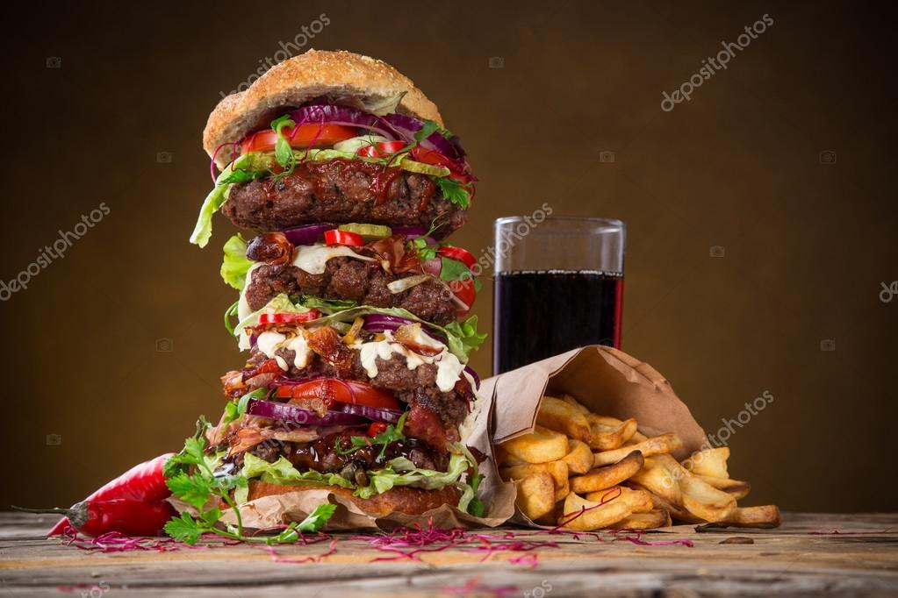

Big Tasty Burger

Description
This recipie will take you into the world of crazy tasting burgers.
They will get your mouth watering and tastebuds exploding with joy.
If you are like me and love a good burger, then you have found the right recipie.
This burger is flavoursome, juicy and inexpesnive to make.
Ingredients
- Beef Mince
- Onion
- Cheese
- Bacon
- Bread Bun
Steps
- Mix herbs and spices with the beef mince and make into a patty and place on
the grill.
- Fry the bacon and the onions.
- Place slices of cheese on the patty so it melts.
- Gently toast the bun to give it that crispiness and assemble the burger.
- Enjoy!